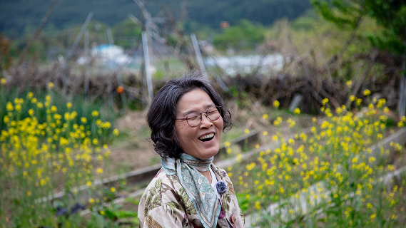
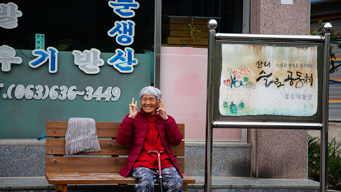

Un premier contact...
Dans le village de Sannae, les résidents sont curieux, enclins au dialogue envers nous.
Des questions sur notre venue fusent, des sourires et quelques mots en anglais sont parfois échangés. Plusieurs habitants iront même jusqu’à nous raccompagner en voiture dans nos logements respectifs alors même que nous ne nous sommes vus qu’une seule fois.
Nos hôtes, ouvertes au dialogue à la fois en anglais et en coréen, sont partantes pour des interviews improvisées.

...devenu régulier
Certains habitants deviendront même des rencontres quotidiennes.
Nous pouvons les apercevoir au détour d’une allée, à un endroit donné, à une heure précise. D’autres fois, c’est en voiture qu’ils nous reconnaissent comme le pasteur que nous avions seulement eu au téléphone qui nous a reconnu uniquement avec le matériel audiovisuel que nous portions.
Il arrive aussi que lors du tournage, les résidents du village parlent d’autres habitants qui seront, à leur tour, interviewés.
